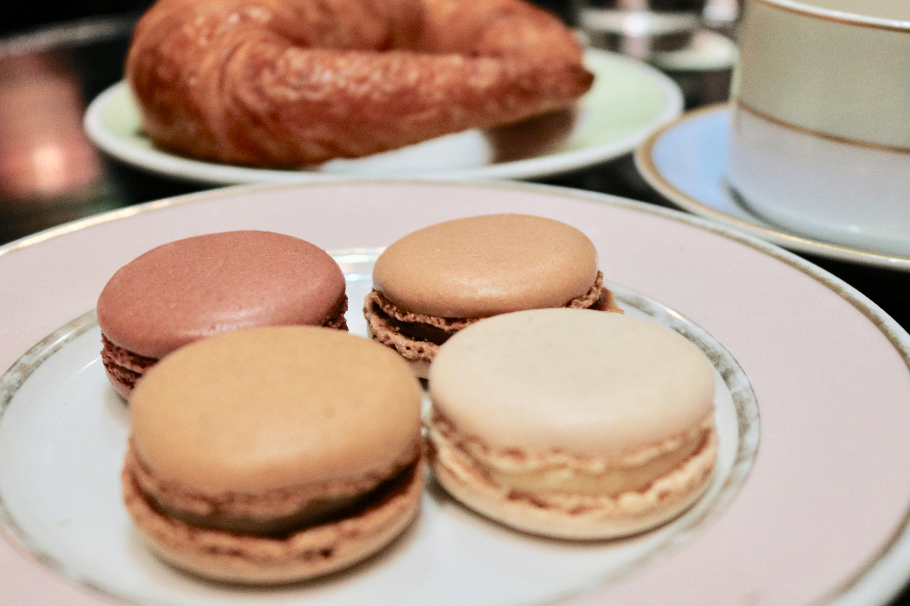
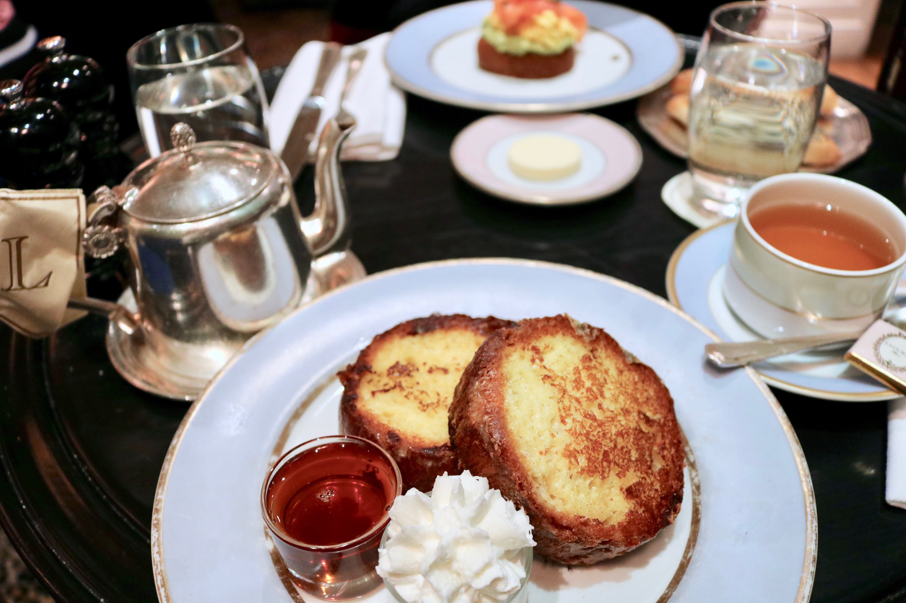
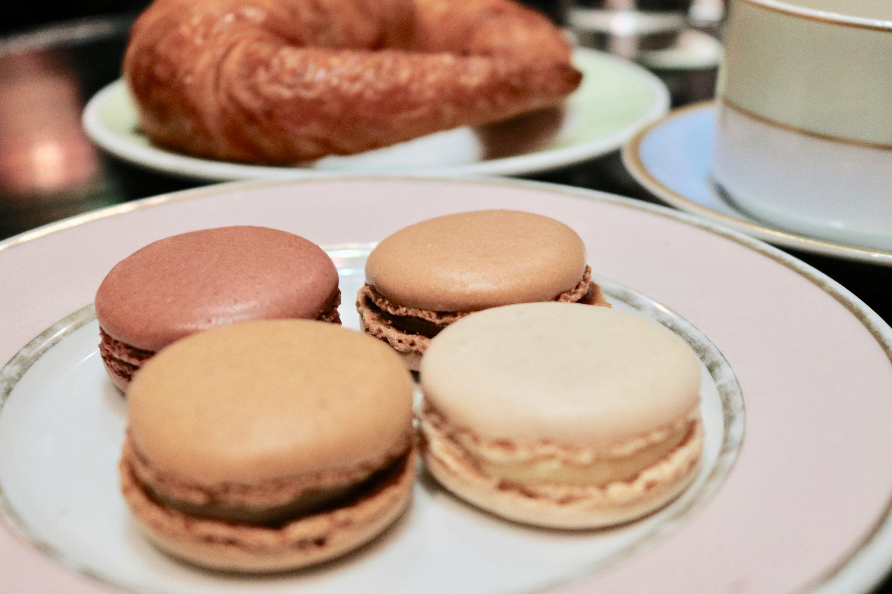
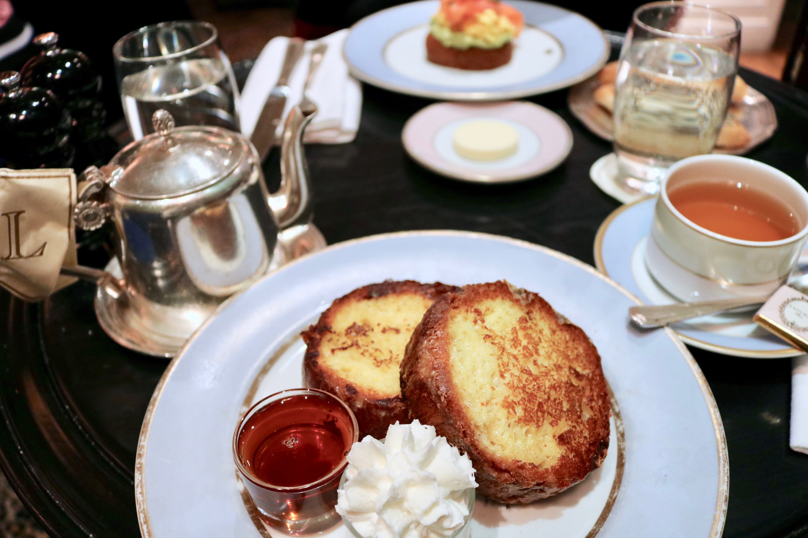
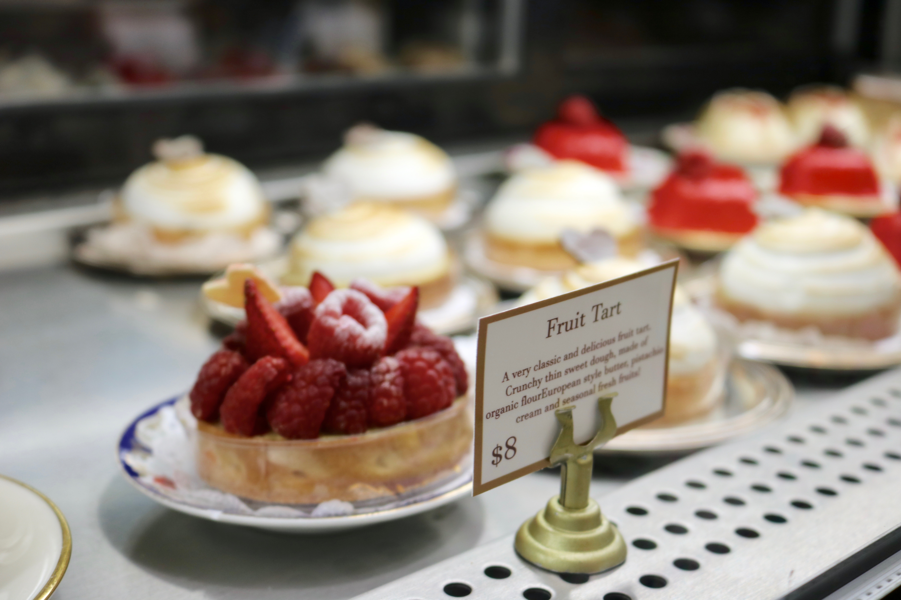
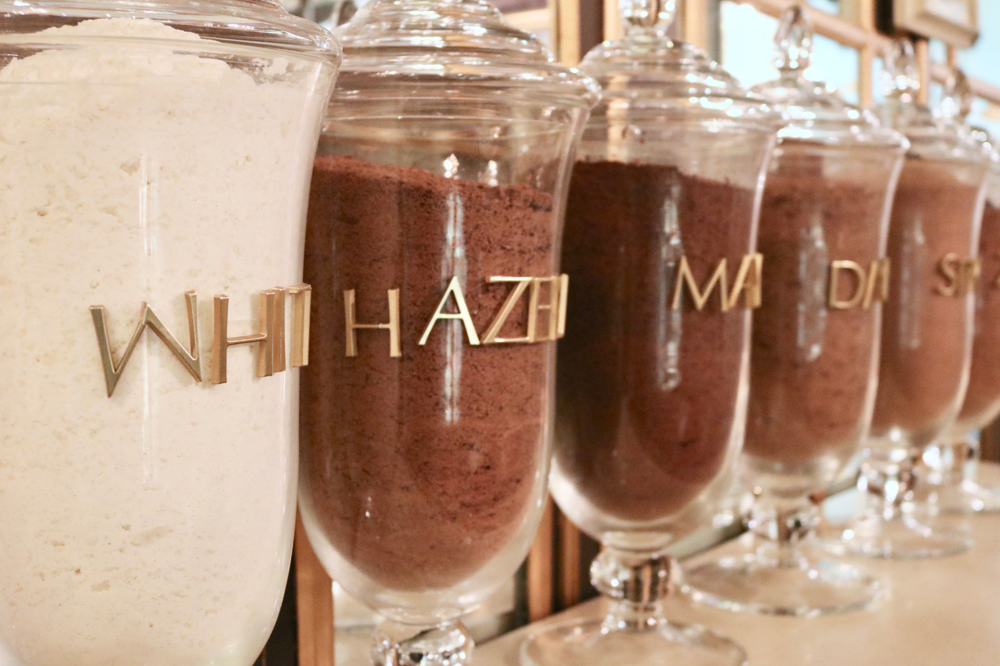
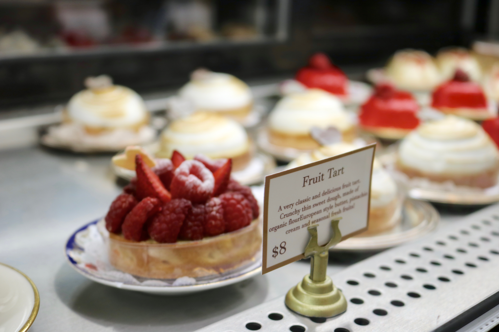
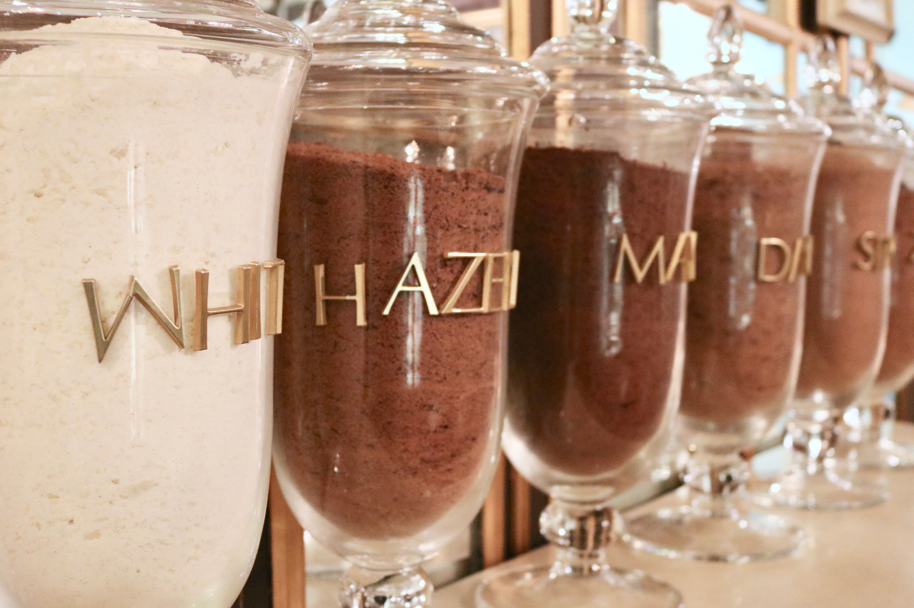
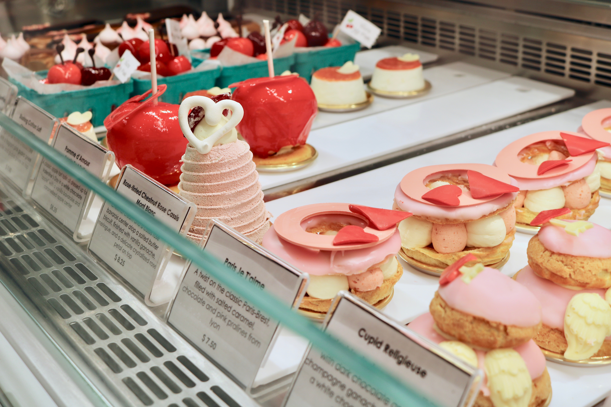
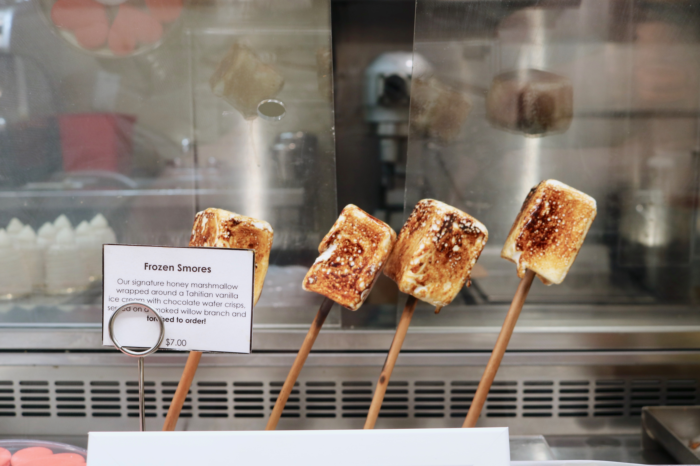

Ladurée
Ladurée is a French pastry shop and tearoom originally founded in Paris near the Champs-Eysées in 1862. The pastry shop currently has locations in over 28 countries, including two shops in New York (On both Madison Avenue and in SoHo). They’re most famously known for their colorful macrons and their assortment of pastries often served on classic silver tiered trays. The shop is beautifully decorated in the style of the Sistine Chapel, complete with pastry chef cherubs painted on the ceilings. Ladurée SoHo offers a wide variety of pastries, teas, chocolates, and even candles and home fragrances.
 



MarieBelle
MarieBelle is a gourmet chocolate shop located on Broome Street in SoHo, New York. The shop is filled with vast arrangements of homemade chocolates and is complete with the MarieBelle Cacao Bar and Tea Salon in the back. The Cacao Bar offers seven different types of hot chocolate along with an array of teas, pastries, and desserts. MarieBelle’s signature treat is their ganache, which is available from $11-290 USD and ranges from two piece sets to 100 piece boxes.
 



Dominique Ansel Bakery
Dominique Ansel Bakery is a small cafe founded by French pastry chef Dominique Ansel himself in 2011. The bakery is most famously known for creating the Cronut, a hybrid of a croissant and a doughnut, in 2013. After the pastry went viral, Dominique Ansel Bakery had lines of over a hundred people per day waiting to try the treat. The bakery is also known for their Cookie Shots, Frozen S’mores, Magic Soufflé, and most recently, their Blossoming Hot Chocolate. The brand has expanded internationally to 6 locations, two of which reside in New York City.
 